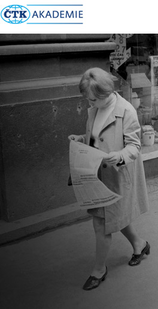

<!DOCTYPE html><!--[if lt IE 7]>        html.no-js.lt-ie9.lt-ie8.lt-ie7(lang="cs") <![endif]-->
<!--[if IE 7]>           html.no-js.lt-ie9.lt-ie8(lang="cs") <![endif]-->
<!--[if IE 8]>           html.no-js.lt-ie9(lang="cs") <![endif]-->
<!--[if gt IE 8]> 
<!--> 
<html lang="cs" class="no-js"> </html><!--<![endif]-->
<head>
  <meta charset="utf-8">
  <meta http-equiv="X-UA-Compatible" content="IE=edge,chrome=1">
  <meta name="viewport" content="width=device-width, initial-scale=1">
  <title>CTK Newsletter 2015
  </title>
  <link rel="apple-touch-icon" href="apple-touch-icon.png">
  <link rel="alternate" href="http://localhost:8080/feed.xml" type="application/rss+xml" title="News from 2015">
  <link rel="stylesheet" href="/css/normalize.css">
  <link rel="stylesheet" href="/css/main.css">
  <link rel="stylesheet" href="/css/fonts.css">
  <script src="js/vendor/modernizr-2.8.3-respond-1.4.2.min.js"></script>
</head>
<body><!--[if lt IE 8]>
  <p class="browserupgrade">You are using an <strong>outdated</strong> browser. Please <a href="http://browsehappy.com">upgrade your browser</a> to improve your experience.</p><![endif]-->
  <header class="header">
    <div class="content-wrap">
      <div class="logo"><a href="http://localhost:8080"> </a></div>
      <h1><a href="http://localhost:8080">CTK Newsletter 2015</a></h1>
      <div class="hambac">nic</div>
    </div>
  </header>
  <div id="content" class="index">
    <div class="content-wrap">
      <div class="col col-1">
        <article class="article excerpt director-letter">
          <h2><a href="/articles/uvodni-slovo/">Uvodní slovo generálního reditele</a></h2>
          <p>Klíčová je pro nás péče o zákazníky, a právě proto vám ČTK v letošním roce nabídla novou Infobanku. Její hodnocení z vaší strany jsou vesměs pozitivní.<a href="/articles/uvodni-slovo/" class="moreLink">&raquo;</a></p>
        </article>
        <article class="article excerpt sefredaktor">
          <h2><a href="/articles/info-era/">Šéfredaktor ČTK Petr Holubec: Význam tiskové agentury v informační éře poroste</a></h2>
        </article>
      </div>
      <div class="col col-2">
        <article class="article excerpt comfort-v-prace">
          <h2><a href="/articles/comfort-v-prace/">Klienti oceňují komfort při práci s novou Infobankou ČTK</a></h2>
          <p>Za velmi uzitecné povazují také propojení textovych zpráv s fotkami, zvuky, infografikou, ale i navzajem mezi sebou.<a href="/articles/comfort-v-prace/" class="moreLink">&raquo;</a></p>
        </article>
        <article class="article excerpt nova-sluzba">
          <h2><a href="/articles/nova-sluzba/">Agentura spustila novou službu ČTK LIVE</a></h2>
          <p>CTK se letos naplno vrhla do on-line prenosu - strucného, rychlého a prubezného zpravodajství z vybranych vyznamnych událostí. Odberatelé je mohou vyuzít prímo k publikaci na internetu nebo jako podklad pro své vlastní on-line prenosy.<a href="/articles/nova-sluzba/" class="moreLink">&raquo;</a></p>
        </article>
        <article class="article excerpt dokaze-titulek">
          <h2><a href="/articles/dokaze-titulek/">To byste nevěřili, co dokáže takový titulek</a></h2>
        </article>
        <article class="article excerpt fotobanka">
          <h2><a href="/articles/fotobanka/">Ve Fotobance ČTK bude mít klient cestu k fotografiím snadnější</a></h2>
          <p>Na prelomu roku 2015 a 2016 by mely webové stránky zacít vyuzívat technologii Visual Search spolecnosti Pixolution. Ta umozní nalézt fotografie nikoli jen na základe metadat jako doposud, ale rovnez na základe vizuální podobnosti snímků. »<a href="/articles/fotobanka/" class="moreLink">&raquo;</a></p>
        </article>
        <article class="article excerpt czech-press-photo">
          <h2><a href="/articles/czech-press-photo/">Roman Vondrouš získal v soutěži Czech Press Photo 2015 první cenu v kategorii Každodenní život</a></h2>
        </article>
      </div>
      <div class="col col-1">
        <article class="article excerpt hospodareni">
          <h2><a href="/articles/hospodareni-ctk/">Hospodaření ČTK v roce 2014</a></h2>
        </article>
        <article class="article excerpt distribuce-zpravy">
          <h2><a href="/articles/distribuce-zpravy/">SONS distribuuje zrakově postiženým zprávy ČTK</a></h2>
        </article>
        <article class="article excerpt brno">
          <h2><a href="/articles/brno/">ČTK se v Brně přestěhovala ze Solniční do rozhlasu</a></h2>
        </article>
        <article class="article excerpt redakci-techniku">
          <h2><a href="/articles/redakci-techniku/">Četka si za totality nakonec musela redakční techniku vyrábět sama</a></h2>
        </article>
      </div><span class="clearfix"></span>
    </div>
  </div>
  <footer>
    <div class="content-wrap">
      <section class="copy">
        <p>&copy; 2015 CTK</p>
      </section>
    </div>
  </footer>
</body>